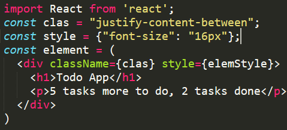

React
by Yanis Machkin
What is React?
React is a component-based library which is used to develop interactive User Interfaces. It is currently one of the most popular JavaScript front-end library.
Why React so fast?
Virtual DOM
Virtual DOM is in-memory representation of Real DOM. It is lightweight JavaScript object which is copy of Real DOM.
At any given time, ReactJS maintains two virtual DOMs, the updated and the previous states.
Effective Updating Virtual DOM
- Efficient diff algorithm
- Batched update operations
- Efficient update of sub tree only
- Uses observable’s instead of dirty checking to detect change
Virtual DOM element vs "real" DOM element
States to find the difference in both the Virtual DOM’s
- If the state of a component has changed, then ReactJS re-renders all the child components even if child components are not modified.
ReactJS traverse the tree using Breadth First Search.
Reconciliation
- Zurich
- London
- New York
- Zurich
- London
What is JSX?
React element
import React from 'react';
import ReactDOM from 'react-dom';
const element = Hello, world
;
ReactDOM.render(element, document.getElementById('root'));Stateless component
Statefull component
Component's life circle

Basic concepts of setState()
// wrong
this.state.fullName = 'victor'
// correct
this.setState( {fullName: 'victor'} );faq
If you have any question or feedback send them please to jm@tut.by